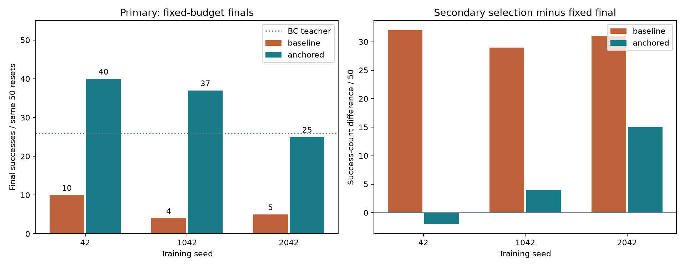
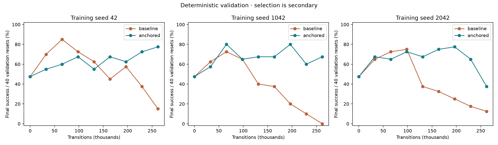
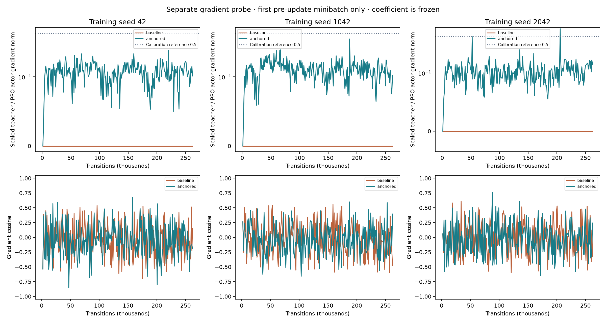
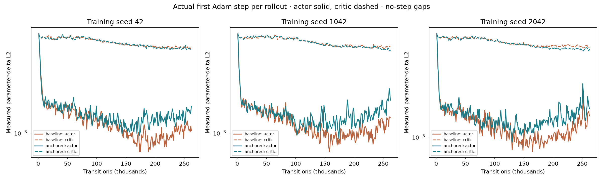
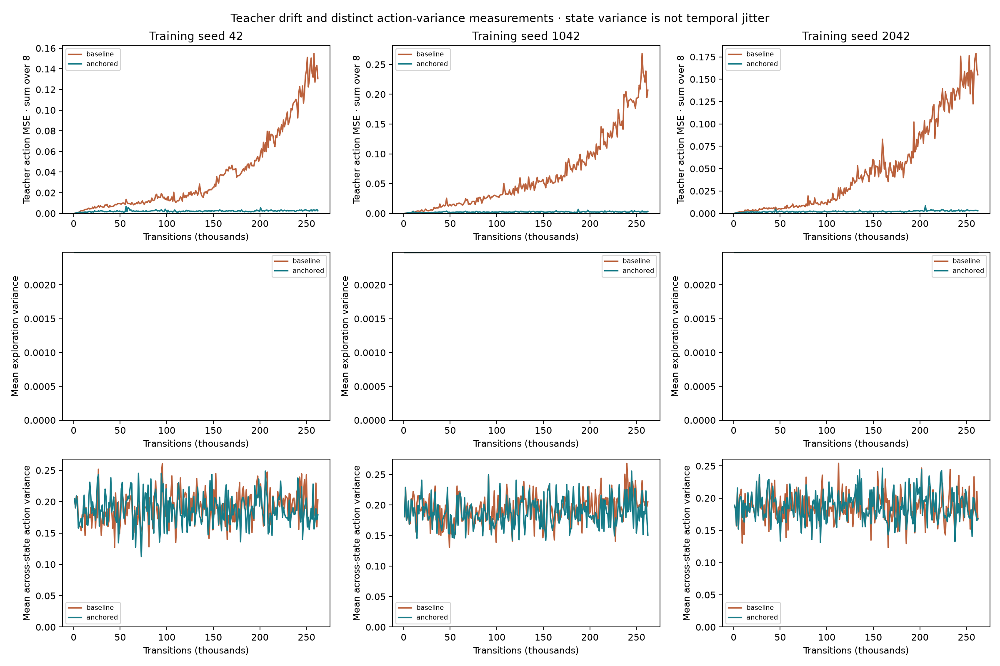
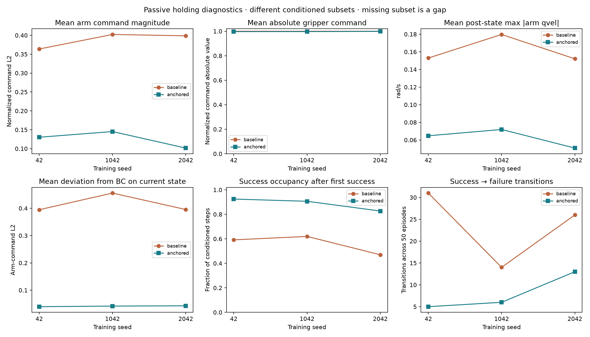

Stage 1 · three paired training seeds · passive holding diagnostics
Can an on-policy teacher loss retain a useful manipulation actor?
Predeclared promising rule: met. BC teacher final success: 26/50. Anchored final must exceed both teacher and paired baseline final by at least five successes in at least two training seeds, and mean selection-to-final collapse must decrease.
Training seed 2042 finishes at 25/50 versus its validation-selected 40/50 and teacher 26/50. Passing the aggregate rule does not mean retention is uniform across training seeds.
Three training seeds, each with two fixed-budget final models at 262,144 transitions. Every condition uses the same 50 held-out reset seeds: these are not 150 independent reset trials. Validation-selected checkpoints are secondary. No stopping override, privileged control, reward change or demonstration replay is used. This short budget does not establish million-transition stability.


What changed?
Both arms use the same bounded critic and copied BC actor. The anchored arm adds coefficient × mean over current on-policy states of the squared eight-action distance between its deterministic Gaussian mean and a separate frozen BC teacher. The loss uses neither validation/test states nor a replay demonstration batch. It directly supervises the actor mean; it adds no direct critic or log-standard-deviation gradient. Both arms retain ordinary PPO and shared global gradient clipping.
The selected checkpoint uses final success, then any-step success, then return across 40 validation resets, with step zero eligible. Selection happens before that boundary's optimizer update; fixed finals include the last update. A selected initial actor is not learned PPO improvement.
Calibration was frozen once
A separate 8,192-transition pilot at seed 91042 was discarded. Its median ideal coefficient was 22.7303; the chosen coefficient is 10.0000 (upper ceiling). Recomputing chosen coefficient × teacher-gradient norm / PPO-gradient norm gives median 0.224, against calibration reference 0.5. A cap hit does not mean the target ratio was reached. The pilot's own stored scaled norm is zero because that pilot used coefficient zero.
Derived calibration ratios · Actual pilot probes · Frozen coefficient and hashes
Actor objectives and actual optimizer steps
The gradient decomposition is a separate read-only probe on the first shuffled minibatch before each update. It reports PPO and teacher contributions before combined clipping, rather than every minibatch. The Adam chart separately measures the actual first executed optimizer step per rollout; missing steps remain gaps. These are distinct measurements.



Teacher loss averages all scored training minibatches; variance measurements use the first pre-update minibatch. Exploration variance is Gaussian sampling variance. Across-state deterministic-mean variance describes different inputs and is not a temporal jitter measure.
What happens after placement and success?
After-first-success summaries exclude the command that first produced success, then include all subsequent actions even if success is lost. Policies can reach success on different episodes and at different times, so conditioned subsets differ. An absent subset is missing, not a measured zero. The exported immediate-success-conditioned summaries separately restrict commands to states successful immediately before acting. Finger deltas are measured finger-position changes, distinct from normalized gripper commands.

Across the six final learners, 0/95 success-loss transitions coincide with a lost grasp flag. These are observed same-step associations, not proof about contact forces or earlier gripper changes. Gripper command magnitude uses a full 0–1 axis; speed is the mean of each post-state’s maximum absolute seven-arm velocity.
All holding summaries and conditioned-step counts · Independent final 3D distances, seven-arm speeds and failure categories
Native held-out rollouts
First two predeclared reset seeds, regardless of outcome. Choose the training seed; the teacher is the same reference. All episode fields and every passive holding record match the corresponding full held-out evaluation. Fourteen native files are checksum-verified.
Reset seed 240000 · training seed 42
BC teacherBaseline finalAnchored finalReset seed 240001 · training seed 42
BC teacherBaseline finalAnchored finalReset seed 240000 · training seed 1042
BC teacherBaseline finalAnchored finalReset seed 240001 · training seed 1042
BC teacherBaseline finalAnchored finalReset seed 240000 · training seed 2042
BC teacherBaseline finalAnchored finalReset seed 240001 · training seed 2042
BC teacherBaseline finalAnchored final
Pairing and evidence
All six actual final checkpoint budgets, original teacher tensors, initial paired canonical tensors and parent RNG manifests, coefficients, calibration hashes and archived source hashes were verified before any held-out environment was created. A separate four-worker pre-update receipt compares all 256 stochastic steps, raw rewards, actions, observations and pre-reset terminal observations exactly, spanning 20 timeouts per arm. Value-head outputs and timeout-corrected rewards are excluded because they may differ by design. Worker seeding and advancing episode seeds repair the historical reset-stream gap without relabeling older experiments.
Protocol · Predeclared criterion calculation · Actual checkpoint provenance · Pre-update receipt · All thirteen test summaries · Compact episode and compressed full-trace hashes · Native video hashes